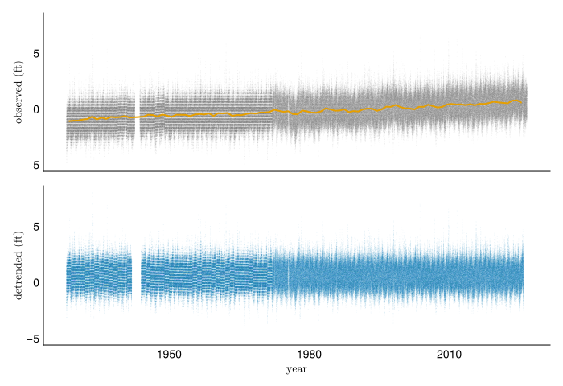
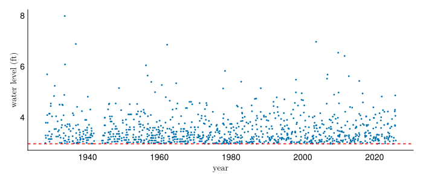
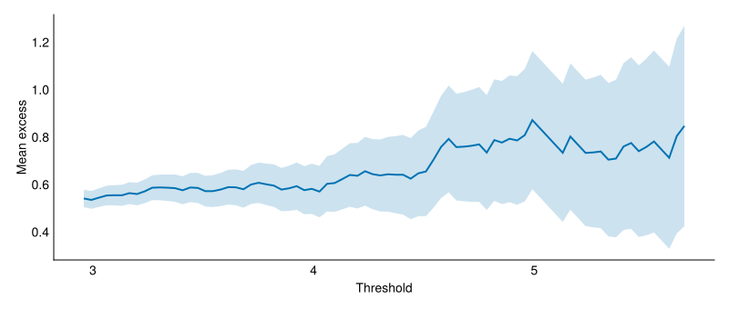
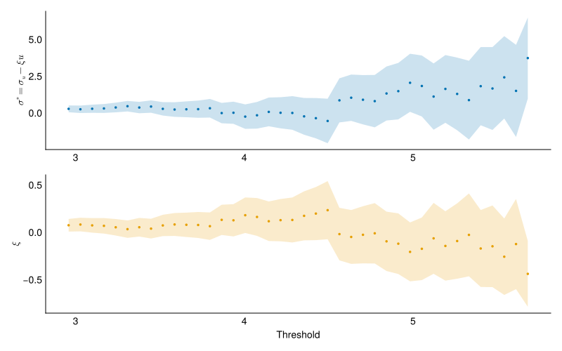
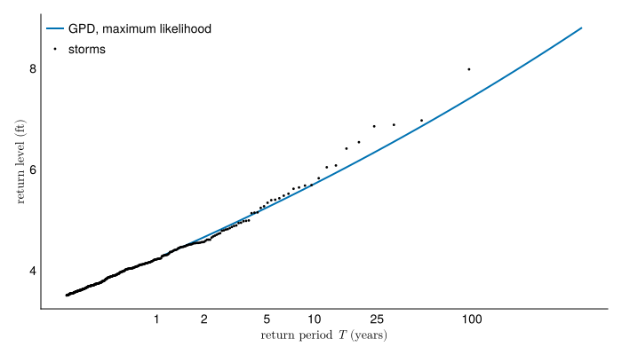
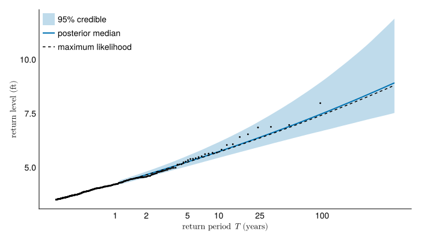
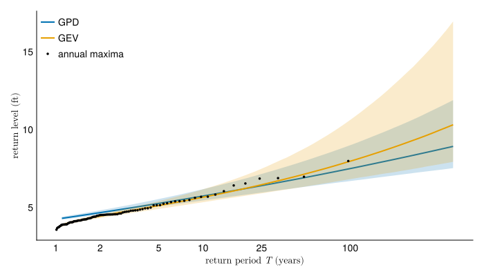

using Pkg
here = dirname(@__FILE__)
Pkg.activate(here)
Pkg.instantiate()
using CEVE543Utils
using CairoMakie, Dates, Distributions, LaTeXStrings
using Printf, Random, Statistics, Turing, Unitful
using DataFrames: DataFrame
using FlexiChains: summarystats
rng = MersenneTwister(543)
set_theme!(theme_minimal(); fontsize=14)
colors = Makie.wong_colors()Lab 5: Peaks over threshold in practice
In this lab, you will conduct a peaks-over-threshold analysis on the tide gauge you used in lab 4. The notebook runs end to end on Sewells Point, Virginia, with a default setting for each choice. Change the station to your lab 4 gauge, then work through the sections in order. At the end, you will be asked to record your inferences, and then to change your assumptions and evaluate how your results change.
Objectives
By the end of this lab, you will be able to:
- Make and defend a choice for threshold from a mean residual life plot and a parameter stability plot.
- Fit a generalized Pareto distribution (GPD) by maximum likelihood and by Bayesian inference.
- Compare peaks-over-threshold and annual-maximum return levels on the same record, and measure how much each choice moves the result.
Setup
Data
load_water_level downloads every hourly reading the gauge has published and caches it beside this notebook, as in lab 4.
WaterLevelRecord: 849657 readings in m
station: 8638610, MSL datum
period: 1928-01-01T00:00:00 to 2026-08-31T23:00:00
levels: -1.504 to 2.032 mChange station to the gauge you used in lab 4.
Detrending
The detrend function implemented in CEVE543Utils offers the three methods you saw in lab 4, with one difference: :linear here fits the line to the annual mean readings, where lab 4 fitted it to the annual maxima.
:msl(mean sea level) subtracts each year’s mean reading from every reading in that year:linearsubtracts a straight line fitted to the annual means:nonesubtracts nothing
detrend also drops any year with fewer than 6,000 hourly readings, about 68% of a year. That is a pre-processing step rather than detrending. The record length used to compute the storm rate below then counts only years with enough readings that they likely caught the major storms. Thus, you may find a slightly different record length to what you had in Lab 4.
- 1
- The functions below take plain numbers, so the units come off here. Levels are in feet from here on, to match lab 4.
835567 readings over 96 yearsdecimal_year(t) = year(t) + (dayofyear(t) - 1) / 365
annual_msl = AnnMaxRecord(record; detrend=:msl, units=u"ft")
raw_levels = ustrip.(u"ft", waterlevels(record))
fig = Figure(; size=(700, 480))
ax_raw = Axis(fig[1, 1]; ylabel=L"\text{observed (ft)}")
ax_flat = Axis(fig[2, 1]; xlabel=L"\text{year}", ylabel=L"\text{detrended (ft)}")
scatter!(ax_raw, decimal_year.(obstimes(record)), raw_levels;
color=(:gray, 0.1), markersize=1, rasterize=true)
lines!(
ax_raw, obsyears(annual_msl) .+ 0.5, ustrip.(baseline(annual_msl));
color=colors[2], linewidth=2
)
scatter!(ax_flat, decimal_year.(times), levels;
color=(colors[1], 0.1), markersize=1, rasterize=true)
linkaxes!(ax_raw, ax_flat)
hidexdecorations!(ax_raw; grid=false)
fig- 1
- The time of each reading as a fractional year, for plotting.
- 2
-
The
:mslbaseline ofAnnMaxRecordis each year’s mean reading, which the orange line plots at mid-year. - 3
-
rasterize=true, on this scatter layer and on the one below it, puts the point clouds into the figure as images and leaves the axes and the line as vectors, so a million readings still fit in a third of a megabyte.

In the upper panel, the orange line is each year’s mean level, and it rises with the trend. With :msl, the lower panel is the upper panel minus the orange line, so the year-to-year wiggles in the mean are removed along with the trend. detrend then adds back the average level of the last five years, so the detrended readings are water levels at present-day sea level and not departures from zero. With :linear, a straight line fitted to the orange curve is subtracted instead (the line itself is not drawn), so those wiggles stay in the lower panel. The high readings at the top of the lower panel are what the threshold and the GPD work on.
Your answer. Which method did you choose for your gauge, and why?
Answer here
Declustering
Hourly readings above a threshold come in runs, because a storm keeps the water high for hours or days. The GPD describes how far each storm exceeds the threshold, and a Poisson rate \(\lambda\), in storms per year, describes how often storms occur. Both assume the storms are independent, so each run has to be reduced to one peak. decluster starts a new cluster whenever more than min_gap_hours pass between one exceedance and the next, and keeps the highest reading in each cluster.
Declustering happens once, at a base threshold u_base, which has to lie below every threshold you consider later.
- 1
-
The level exceeded 1% of the time, about 88 hours a year. The cell that sets
threshold, under Threshold diagnostics, stops with an error if your threshold is at or below this value. If that happens, lower this base threshold by changing 0.99 here to 0.98, and rerun from this cell.
base threshold 2.96 ft: 994 storms, 10.4 per yearDepending on how you define the gap, you will get different numbers of storms:
gap 12 h: 1453 storms, 15.14 per year
gap 24 h: 1086 storms, 11.31 per year
gap 72 h: 994 storms, 10.35 per year
gap 168 h: 847 storms, 8.82 per year
gap 336 h: 629 storms, 6.55 per yearOf course, there are other ways to decluster as well.

Your answer. What gap did you choose, and why does it suit the storms that raise water levels at your gauge? Use the table: say whether the storm count levels off over some range of gaps, and where your choice falls relative to that range.
Answer here
Threshold diagnostics
The mean residual life plot and the parameter stability plot are drawn from the cluster peaks, as in the “Peaks over threshold in practice” slides from Monday 9/21.

We also went over the stability plot:

Now, choose a value for your threshold and write it below! The default of 3.5 ft shown here is not necessarily a good one!
threshold = 3.5 # <- your choice
threshold > u_base || error("threshold must exceed u_base, $(round(u_base; digits=2))")
n_exceed = count(>(threshold), peaks)
λ = n_exceed / n_years
@printf("threshold %.2f ft: %d storms, λ = %.2f per year\n", threshold, n_exceed, λ)
n_exceed >= 30 || @warn "only $n_exceed storms above the threshold; try lowering it"threshold 3.50 ft: 358 storms, λ = 3.73 per yeartrueYour answer. What threshold did you choose? Point to what in each plot supports it, and say how many storms remain above it.
Answer here
The model
Like last week, you define the model in Turing.jl. It is a GPD fitted to the excess over the threshold, with priors weak enough that the data decide both parameters:
- 1
- Each storm above the threshold, measured from the threshold rather than from zero.
- 2
- Fitting the log of the scale keeps it positive with no truncation, and a standard deviation of 3 on that scale asserts almost nothing: 95% of the prior mass runs from 0.003 to 350 ft.
- 3
- Most tide gauge records give a shape between about \(-0.2\) and \(0.3\), and this prior puts 95% of its mass in \([-0.5, 0.5]\).
- 4
-
:=records \(\sigma\) beside the sampled parameters, so both fits below read it off directly instead of exponentiating by hand. - 5
-
GPKernel(σ, ξ)is the GPD log density fromCEVE543Utils, the same density asGeneralizedPareto(0, σ, ξ)fromDistributionsand interchangeable with it here. It is written to stay numerically stable as \(\xi\) approaches zero, where dividing the logarithm by the shape loses precision.
Maximum likelihood fit
maximum_likelihood maximizes the likelihood, which is the y .~ GPKernel(σ, ξ) line alone; the priors do not enter. The return level also needs \(\lambda\), because the GPD describes how far one storm exceeds the threshold and the return period is measured in years. The \(T\)-year level is exceeded on average once in \(T\) years, which is once in \(\lambda T\) storms, so the chance that one storm exceeds it is \(1/(\lambda T)\). Setting the GPD’s exceedance probability to \(1/(\lambda T)\) and solving for the level gives
\[ x_T = u + \frac{\sigma}{\xi}\left[(T\lambda)^{\xi} - 1\right]. \]
This is the formula from the Monday 9/21 board notes, and returnlevel(d, T; rate=λ) computes it.
mle = maximum_likelihood(
model; initial_params=InitFromParams((logσ=log(mean(excess)), ξ=0.1))
)
isfinite(mle.lp) || error("the optimizer stopped at zero likelihood; rerun this cell")
θ̂ = NamedTuple(mle.params)
gpd_mle = GeneralizedPareto(threshold, θ̂.σ, θ̂.ξ)
@printf("σ = %.3f ft, ξ = %.3f\n", gpd_mle.σ, gpd_mle.ξ)
@printf("100-year level: %.2f ft\n", returnlevel(gpd_mle, 100; rate=λ))- 1
- Where the optimizer starts, at the moment estimate of the scale and a small positive shape. Left to itself it starts from a draw of the prior, which spans scales from 0.003 to 350 ft, and a start far from the data lands where the likelihood is zero and stays there.
- 2
- A run that ends at zero likelihood returns without complaint, so check it rather than reading the parameters it reports.
- 3
-
The fitted parameters, as a named tuple:
θ̂.σandθ̂.ξ. - 4
- Packaged as a distribution whose location is the threshold, so a level read off it is a water level rather than an excess.
σ = 0.539 ft, ξ = 0.068
100-year level: 7.43 ftThe fitted distribution gives a return level at every return period:
return_periods = exp.(range(log(1.1), log(500); length=60))
storms = sort(filter(>(threshold), peaks); rev=true)
storm_periods = n_years ./ (1:length(storms))
fig = Figure(; size=(700, 400))
ax = Axis(fig[1, 1]; ylabel=L"\text{return level (ft)}")
lines!(
ax, return_periods, [returnlevel(gpd_mle, T; rate=λ) for T in return_periods];
color=colors[1], linewidth=2, label="GPD, maximum likelihood"
)
scatter!(ax, storm_periods, storms; color=:black, markersize=4, label="storms")
return_period_axis!(ax)
axislegend(ax; position=:lt)
fig
Bayesian fit
The same model goes to sample, which draws from the posterior with NUTS.
- 1
- Four chains of 2,000 draws, with the target acceptance rate raised from 0.65 to 0.99 as in lab 4. A GPD with \(\xi < 0\) has an upper bound, and at the default step size NUTS proposes shapes that put the largest storm past it, which it reports as a divergence.
Check the chains before using them, as in lab 4: \(\hat R\) above 1.01 or any divergences mean they have not converged.
function check_chain(chain, label)
stats = DataFrame(summarystats(chain))
divergences = sum(chain[:numerical_error])
@printf(
"%-4s worst R̂ = %.3f, smallest ESS = %5.0f, divergences = %d\n",
label, maximum(stats.rhat), minimum(stats.ess_bulk), divergences
)
return nothing
end
check_chain(chain, "GPD")GPD worst R̂ = 1.001, smallest ESS = 2195, divergences = 0Each posterior draw is one pair \((\sigma, \xi)\), and so one GPD with its own return-level curve. The rate \(\lambda\) is held at its observed value, so the credible interval covers uncertainty in \(\sigma\) and \(\xi\) and none in how often storms arrive.
draws = DataFrame(chain)
gpd_draws = [GeneralizedPareto(threshold, σ, ξ) for (σ, ξ) in zip(draws.σ, draws.ξ)]
gpd_curves = [[returnlevel(d, T; rate=λ) for T in return_periods] for d in gpd_draws]
band_at(curves, p) =
[quantile(getindex.(curves, k), p) for k in eachindex(first(curves))]
gpd_100 = [returnlevel(d, 100; rate=λ) for d in gpd_draws]
@printf("100-year level: median %.2f ft, 95%% interval [%.2f, %.2f] ft\n",
median(gpd_100), quantile(gpd_100, 0.025), quantile(gpd_100, 0.975))
λ_se = sqrt(n_exceed) / n_years
@printf("λ = %.2f per year, Poisson standard error %.2f\n", λ, λ_se)
level_lo = returnlevel(gpd_mle, 100; rate=λ - λ_se)
level_hi = returnlevel(gpd_mle, 100; rate=λ + λ_se)
@printf("100-year level with λ one standard error lower and higher: %.2f, %.2f ft\n",
level_lo, level_hi)- 1
- One row per posterior draw, with a column per parameter.
- 2
- The count of storms is Poisson, so its standard deviation is estimated by \(\sqrt{n}\), and dividing by the record length gives the standard error of \(\lambda\).
100-year level: median 7.50 ft, 95% interval [6.70, 9.00] ft
λ = 3.73 per year, Poisson standard error 0.20
100-year level with λ one standard error lower and higher: 7.39, 7.48 ftfig = Figure(; size=(700, 400))
ax = Axis(fig[1, 1]; ylabel=L"\text{return level (ft)}")
band!(
ax, return_periods, band_at(gpd_curves, 0.025), band_at(gpd_curves, 0.975);
color=(colors[1], 0.25), label="95% credible"
)
lines!(
ax, return_periods, band_at(gpd_curves, 0.5);
color=colors[1], linewidth=2, label="posterior median"
)
lines!(
ax, return_periods, [returnlevel(gpd_mle, T; rate=λ) for T in return_periods];
color=:black, linestyle=:dash, label="maximum likelihood"
)
scatter!(ax, storm_periods, storms; color=:black, markersize=4)
return_period_axis!(ax)
axislegend(ax; position=:lt)
fig
Your answer. How does the maximum likelihood 100-year level compare with the posterior median and the credible interval, and what in the model explains any gap?
Answer here
Your answer. Is holding \(\lambda\) fixed a reasonable simplification at your gauge? Compare the change in the 100-year level when \(\lambda\) moves by one standard error, printed above, with the width of the credible interval.
Answer here
Comparison with the GEV
The annual maxima of the same detrended readings give a GEV fit to compare against. The readings are already detrended, so detrend=:none stops AnnMaxRecord from detrending them twice, and both fits see the same record.
annmax = AnnMaxRecord(detrended; detrend=:none, units=u"ft")
y = ustrip.(waterlevels(annmax))
gev_mle = only(getdistribution(gevfit(y)))
fit_gev = gevfitbayes(y; rng=rng, sampler=NUTS(0.99), progress=false)
gev_draws = only.(posterior_distributions(fit_gev))
gev_curves = [[returnlevel(d, T) for T in return_periods] for d in gev_draws]check_chain(fit_gev.estimate, "GEV")
gev_100 = [returnlevel(d, 100) for d in gev_draws]
@printf("%d annual maxima, %d storms above the threshold\n", length(y), n_exceed)
for (label, draws) in (("GPD", gpd_100), ("GEV", gev_100))
@printf("100-year %s: %.2f ft [%.2f, %.2f]\n",
label, median(draws), quantile(draws, 0.025), quantile(draws, 0.975))
endGEV worst R̂ = 1.002, smallest ESS = 1802, divergences = 0
96 annual maxima, 358 storms above the threshold
100-year GPD: 7.50 ft [6.70, 9.00]
100-year GEV: 7.97 ft [6.82, 10.62]_, _, annmax_periods = plotting_positions(y)
fig = Figure(; size=(700, 400))
ax = Axis(fig[1, 1]; ylabel=L"\text{return level (ft)}")
fits = ((gpd_curves, colors[1], "GPD"), (gev_curves, colors[2], "GEV"))
for (curves, colour, label) in fits
lo, hi = band_at(curves, 0.025), band_at(curves, 0.975)
band!(ax, return_periods, lo, hi; color=(colour, 0.2))
lines!(
ax, return_periods, band_at(curves, 0.5);
color=colour, linewidth=2, label=label
)
end
scatter!(
ax, annmax_periods, sort(y; rev=true);
color=:black, markersize=5, label="annual maxima"
)
return_period_axis!(ax)
axislegend(ax; position=:lt)
fig
Your answer. Do the two approaches agree on the 100-year level, and which interval is narrower? Explain the difference in width from the data each fit uses.
Answer here
Your answer. Compare both with your lab 4 result. If they differ, say which choice made the difference.
Answer here
Sensitivity experiment
In this section, you will measure how much each choice moves the 100-year level. The cell below prints the settings you used and the numbers the table asks for.
@printf("detrend %s, gap %d h, threshold %.2f ft\n",
detrend_method, min_gap_hours, threshold)
@printf(
"storms %d, λ %.2f, ξ %.3f, MLE %.2f ft, posterior %.2f ft [%.2f, %.2f]\n",
n_exceed, λ, gpd_mle.ξ, returnlevel(gpd_mle, 100; rate=λ),
median(gpd_100), quantile(gpd_100, 0.025), quantile(gpd_100, 0.975)
)detrend msl, gap 72 h, threshold 3.50 ft
storms 358, λ 3.73, ξ 0.068, MLE 7.43 ft, posterior 7.50 ft [6.70, 9.00]Copy that output into the table below as your first row. Then change one setting at a time, run every cell from the one you changed to the end of the notebook, and record the new output as a new row. Before each run, write in the Change column what you expect the 100-year level to do. Try at least three changes: a different threshold, a different declustering gap, and a different detrending method. You can also change a prior in gpd_excess, which means rerunning from that cell. The prior on \(\xi\) is the one to try, since it is the one the data constrain least. Return the settings to your chosen values before you turn the lab in.
Your answer. The last three columns are the 100-year level in feet: the maximum likelihood estimate (MLE), the posterior median, and the 95% credible interval.
| Change | Storms | \(\lambda\) | \(\xi\) | MLE | Posterior | Interval |
|---|---|---|---|---|---|---|
| none | ||||||
Your answer. Which change moved the 100-year level most, and by how much compared with the width of the credible interval?
Answer here
Your answer. Suppose every assumption behind the peaks-over-threshold model holds exactly: the storms are independent, they arrive as a Poisson process, and their excesses follow a GPD above every threshold you tried. Under those assumptions, should the 100-year level change when you change each of these, and why?
- the threshold
- the declustering gap
- the prior
- the detrending
State whether your table agrees empirically, and speculate why any differences might persist.
Answer here
Reporting a design value
Your answer. Report one 100-year water level for your gauge, with an interval, as you would in a report a city will act on. List the choices it depends on and say which one you are least sure of.
Answer here
Turning it in
This lab is due on Canvas one week after the Friday session that starts it.
Check that every Your answer block is filled in.
Render the notebook to a PDF. In the terminal, from the lab folder, run:
This writes
index.pdfbeside the notebook. It runs the whole notebook from the top in a fresh process, so it also confirms your work does not depend on leftover REPL state.Commit and push your work, with GitHub Desktop or by asking Claude to commit and push.
Upload
index.pdfto the Lab 5 assignment on Canvas.Paste the link to your repository in the same Canvas submission.
If the render fails and you cannot fix it, upload what you have and say where it broke. A lab that does not render is worth more to me than a lab you did not turn in.
Note what broke, what Claude got wrong, and what you had to fix by hand, and bring it to the next session.